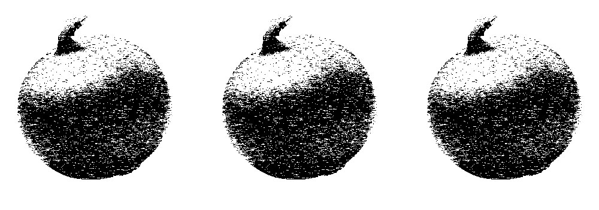

짓눌리는 몸, 흔들리는 시야.
여긴 어디지?
너무 비좁다.
저 낮은 천장은 조만간 날 깔아뭉갤 것만 같다.
...
점점
숨이
막혀온다
살려줘!!!!
눈을 뜨니 하얀 천장이 보인다.
휴, 꿈이었구나!
타는 목에 머리맡에 놓인 1.5리터짜리 페트병을 들어 그대로 물을 마신다.
꿈과 다를 바 없는 좁고 작은 집.
여긴 나의 5평짜리 서울 자취방이다.
✞ 좁은 집의 악몽 ✞
눈을 비비고 몸을 일으키니 하품이 나온다. 머리가 멍하다.
공기가 모자란다.
이 좁은 방은 자고 일어나면 이산화탄소로 가득 차버리는 건지 항상 숨이 막힌다. 따라서 내 아침은 창문을 열어 환기하는 걸로 시작한다. 여긴 서울의 자취방. 커튼 대신 붙인 반투명한 시트지 사이로 앞 건물 이웃의 화분이 보인다.
점심을 먹기 위해 주방 싱크대 앞에 선다. 침대에서 단 한 발짝.
오늘 메뉴는 카레다. 이틀 전에도, 저번 주에도 카레였다. 자취생이 할 수 있는 요리가 거기서 거지지. 그래도 나름 맛있게 해보겠다고 이번엔 양파를 잔뜩 넣어본다.

눈물이 난다. 양파가 너무 맵다.
양파 썰면서 우는 건 다 만화적인 표현인 줄 알았다. 근데 그게 나였네. 집에선 수저만 놓을 줄 알았지, 요리라곤 안 해봤는데. 엄마가 이 모습을 봤으면 감동의 눈물을 흘렸을 거다.
남은 양파는 비닐봉지에 넣어 냉장고에 넣어둔다.
그 순간 발을 헛디딘다. 신발장과 부엌은 발 하나, 약 30센티미터 거리이기 때문에 넘어지기 십상이다.
와장창!
아. 망했다. 나의 신발 옆 살포시 얹어지는 채 썬 양파들.
‘그냥 다 죽여버리고 싶다….’
좁은 집에 산다는 건 하나의 분노 참기 챌린지와 같다. 50센티도 안 되는 싱크대는 밥 한 끼 해 먹으면 가득 차 버려 설거지할 때마다 온 방이 물바다가 되고, 조그마한 간이 건조대가 깨 먹은 그릇만 5개가 넘는다. 침대는 너무 좁아 팔다리를 펴면 벽에 닿아 찌그러진다. 4평짜리 집은 주차장 한 칸과 거의 맞먹는 크기라고 한다. 그러니까 난 주차장보다 조금 더 큰 곳에서 씻고 먹고 잠을 자고 산다는 거지.
하루에 수십 번쯤 답답한 마음에 소리를 지르며 육두문자를 내뱉고 싶어지지만 참아야 한다. 여긴 서울의 자취방. 옆집의 화장실 사용 여부를 알 수 있는 곳이다.
빨래 건조대를 옆으로 살짝 치우고 몸을 빼내 다시 침대에 누웠다. 너무 화냈더니 머리가 지끈지끈한다. 좀 더 낡았더라도 넓은 집에 갈걸. 차라리 반지하 집에 갔더라면.. 그러다 이름을 말해선 안 되는 그 벌레의 존재가 떠오르며 지금의 처지에 만족한다. 그래, 좁더라도 깔끔한 게 어디야. 좁으니까 냉난방도 편하게 틀잖아.
이런저런 잡생각을 하다 보니 슬슬 카레가 완성되어간다.
보글보글.
물이 끓는 소리에 다시 일어서다가…
미처 치우지 못한 양파 조각을 밟는다.
忍忍忍…..
결국 터져 나오는 욕설을 중얼중얼 내뱉으며 이 집에 사는 1년 동안 수십번은 외쳤던 그 말을 다시 한번 마음속에 새긴다.